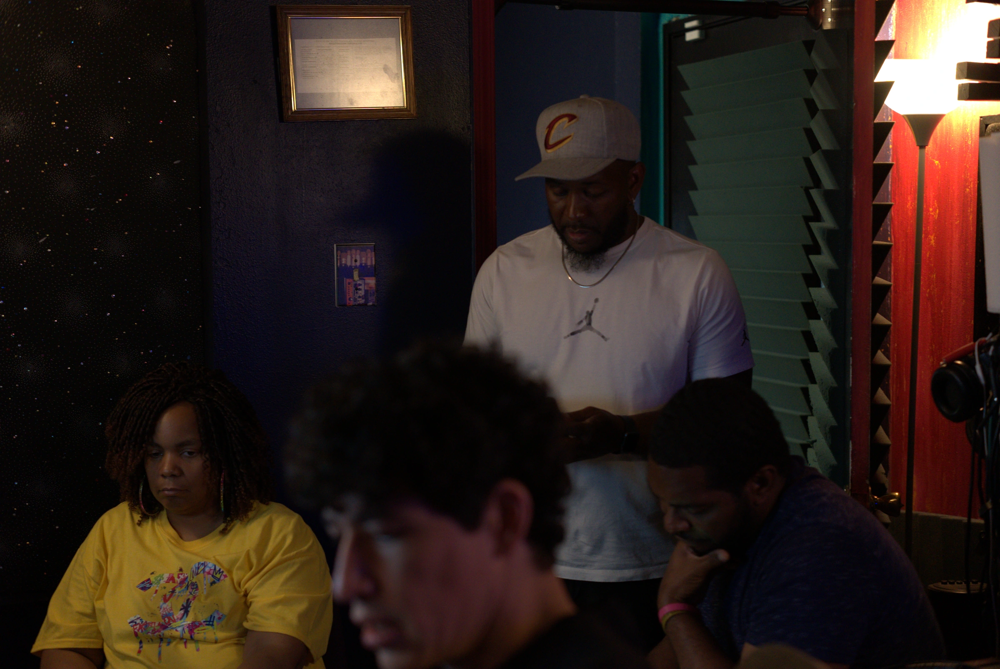

Checkmark Live
Performance,
captured live.
Live band or musician recording with audio and lighting support.
A real performance,
presented with intention.
Tell us about the performers, the space, your audio needs, and how you plan to use the recording.

- 01Performers
- Tell us about the band or musician.
- 02Space
- Describe the space and any special considerations.
- 03Audio needs
- Share your audio requirements.
- 04Intended use
- Let us know how you plan to use the recording.
Project based
Custom quote
Describe the performers, space, audio needs, and intended final use so the studio can plan the right approach.